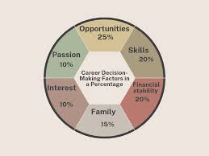

The key things to consider to find a career that fits you best.
- Interests
- What activity or subject do you enjoy the most?
- Skills & Strengths
- What are you naturally good at?
- Consider your academic,technical, and soft skills.
- Personality
- Are you introverted or extroverted?
- Do you prefer working alone or in teams?
- Careers should match your personality type for satisfaction.
- Values & Goals
- What matters most to you — money, helping others, creativity, or prestige?
- Your values guide long-term career happiness.
- Market Demands
- Is the field growing or shrinking?
- Consider job stability, availability, and growth prospects.
- Job Satisfaction & Impact
- Will this career give you a sense of purpose?
- How much impact will you make in your role?
- Long-Term Growth
- Does the career offer promotions, learning opportunities, or new challenges?
- Can you see yourself in this field 10–20 years from now?